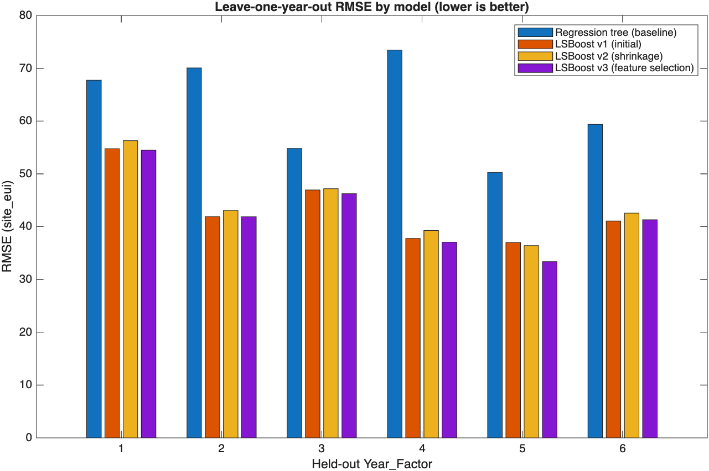
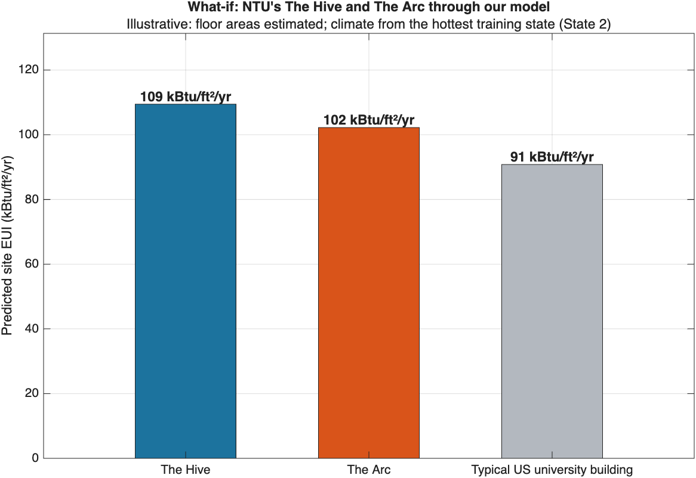
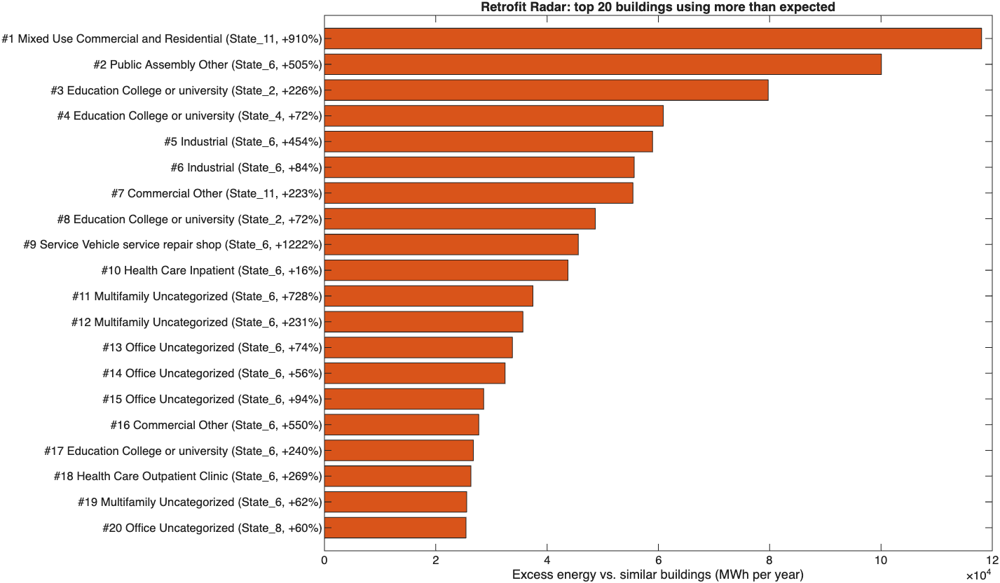

We predict how much energy a building should use from its type, size, age and climate, then flag the buildings using far more than similar ones. Those are the first places to audit and retrofit. Built end to end in MATLAB on the WiDS Datathon 2022 data.
▶ Watch the 5-minute demo video

Interactive charts of every model iteration, accuracy metrics, the actual-vs-predicted grid, and a filterable retrofit shortlist. It updates live while the pipeline runs.

Click NTU's The Hive or The Arc in 3D. Our trained model runs in your browser and shows energy intensity, annual MWh and average kW, with live response curves.

The full walkthrough, exported from a MATLAB live script: data findings, validation design, model iteration, accuracy, Retrofit Radar and the NTU what-if.